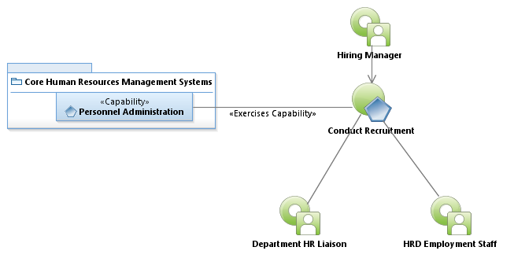
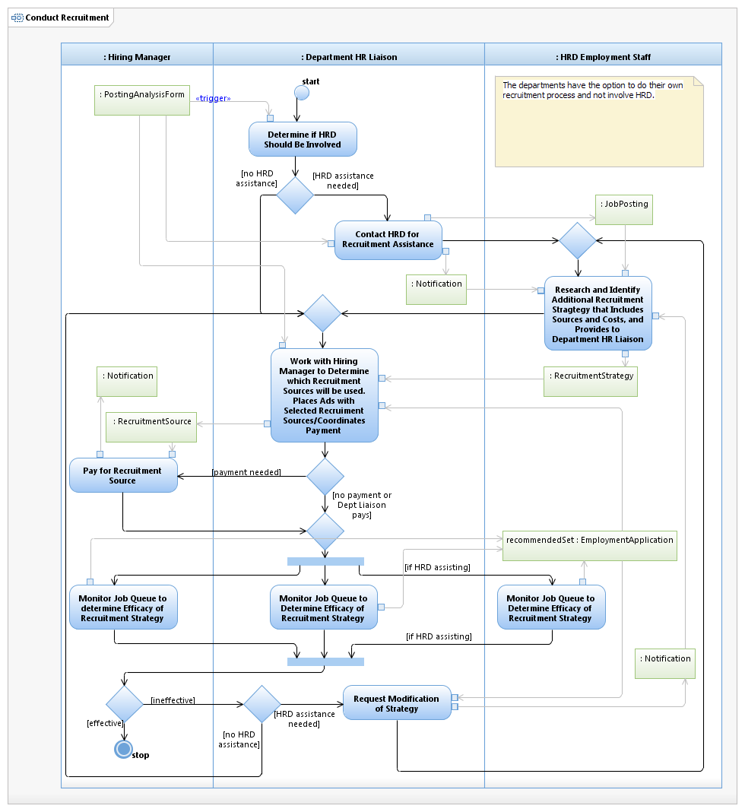

Use Case Model: Conduct Recruitment
Architect: Aaron Brown, IT Enterprise Architect Senior
Date Last Modified: 02/12/2013
User Review: Sonya Alexander-Harry, Roberta Byram
Date: 02/06/2013
A hiring authority and HR determines additional assistance is needed to attract candidates for a position.
Follow link to Role Definitions

Use Case Model: Conduct Recruitment

Activity Model: Conduct Recruitment